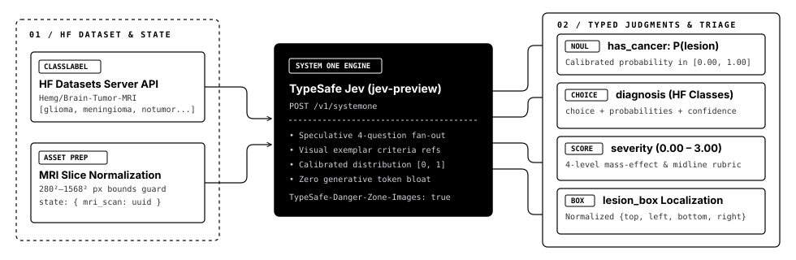

Detect MRI lesions with calibrated System One judgments.
Pulls dynamic ClassLabel choices and visual exemplars directly from Hugging Face MRI datasets, then evaluates noul, choice, score, and box via TypeSafe Jev or local OpenJev vision models.
POST https://api.typesafe.ai/v1/systemoneanswersWhy System One primitives instead of generative prompt-and-parse?
Medical imaging triage requires calibrated probability distributions, explicit visual exemplars, and deterministic bounding boxes—not chatty prose.
Dataset-Driven Choice Criteria
Instead of hardcoding class names, is-lesion queries the Hugging Face Datasets Server API to extract the dataset's ClassLabel schema and attaches real reference MRI slices directly inside the choice criteria.
4 Primitives in 1 Request
Every MRI slice is evaluated against noul (binary presence), choice (lesion subtype), score (0–3 mass effect rubric), and box (normalized lesion coordinates) in a single HTTP round-trip.
Radiologist Escalation Gate
When diagnosis.confidence drops below your clinical threshold or two tumor subtypes compete closely in probability, code automatically routes the scan to ESCALATE_RADIOLOGIST_REVIEW.
TypeSafe Jev vs. Local OpenJev Vision Engines
Evaluated across Hemg/Brain-Tumor-MRI-Dataset (25 glioma, 25 meningioma, 25 notumor, 25 pituitary; excluding reference exemplars) via node scripts/bench-engines.mjs. Full raw telemetry in docs/data/benchmark-results.json.
| ENGINE / EVALUATION MODE | BINARY ACC | SENS / SPEC | BIN F1 | 4-CLASS / MAC-F1 | BRIER / ECE ↓ | GATED ACC (≥0.65) · COV | ERR CATCH | BOX / SCORE | P50 / P95 |
|---|---|---|---|---|---|---|---|---|---|
TypeSafe Jev 1.14 (+ HF Exemplars)
engine: 'jev' · 1 ref image/class |
84.0% | 85.3% / 80.0% | 88.9% | 69.0% / 69.6% | 0.0955 · 4.9% | 93.0% bin · 86.0% 4c (57%) | 74.2% | Native box+score |
165 / 273 ms |
TypeSafe Jev 1.14 (Text-Only Criteria)
engine: 'jev-text' · 0 ref images |
81.0% | 81.3% / 80.0% | 86.5% | 62.0% / 62.2% | 0.1113 · 7.1% | 89.3% bin · 80.4% 4c (56%) | 71.1% | Native box+score |
108 / 200 ms |
OpenJev Local ONNX · CLIP (+ Exemplars)
engine: 'clip-exemplar' · ViT-B/32 cosine |
89.0% | 85.3% / 100% | 92.1% | 69.0% / 69.3% | 0.0966 · 12.5% | 94.1% bin · 82.4% 4c (17%) | 90.3% | None | 95 / 257 ms |
OpenJev Local ONNX · CLIP (Zero-Shot Text)
engine: 'clip-zeroshot' · text prompts only |
75.0% | 100% / 0.0% | 85.7% | 25.0% / 10.0% | 0.2125 · 69.0% | 75.0% bin · 25.0% 4c (100%) | 0.0% | None | 106 / 217 ms |
OpenJev In-Tree Exemplar Fingerprint
engine: 'openjev' · 0-dep byte histogram |
88.0% | 100% / 52.0% | 92.6% | 73.0% / 73.3% | 0.1655 · 46.4% | Escalates 100% (conf=0.38) | 100% | Heuristic | 1 / 1 ms |
Per-Class Subtype Recall & Confusion (N = 25 / class)
TP / TN / FP / FN| ENGINE | GLIOMA | MENING. | NOTUMOR | PITUITARY | TP·TN·FP·FN |
|---|---|---|---|---|---|
| Jev 1.14 (+Ex) | 76.0% | 68.0% | 76.0% | 56.0% | 64·20·5·11 |
| Jev 1.14 (Text) | 60.0% | 60.0% | 76.0% | 52.0% | 61·20·5·14 |
| CLIP (+Ex) | 52.0% | 60.0% | 100.0% | 64.0% | 64·25·0·11 |
| CLIP (Zero-Shot) | 0.0% | 100.0% | 0.0% | 0.0% | 75·0·25·0 |
| OpenJev (0-dep) | 72.0% | 76.0% | 52.0% | 92.0% | 75·13·12·0 |
Key Empirical & Calibration Findings
choice.criteria lifts glioma recall from 60% → 76%, lowers Expected Calibration Error from 7.1% → 4.9%, and boosts confidence-gated binary accuracy to 93.0% across 57% of scans.
Xenova/clip-vit-base-patch32 predicts meningioma on all 100 slices (0% specificity, 69.0% ECE). However, switching CLIP from text prompts to visual exemplar cosine similarity (clip-exemplar) recovers 89.0% binary accuracy and 100% specificity offline in 95 ms.
69.0%), only TypeSafe Jev provides calibrated epistemic confidence (4.9% ECE vs. 12.5%), continuous severity scoring (0..3), and native 2D lesion bounding boxes (box).
End-to-End Speculative Evaluation Pipeline
Hugging Face ClassLabel choices and visual reference assets flow into a single TypeSafe Jev jev-preview evaluation.

Three-line quick start in Node.js & CLI
Switch seamlessly between TypeSafe Jev (engine: 'jev'), local ONNX CLIP ('clip-exemplar'), local Ollama VLMs ('ollama'), or zero-dep fallback ('openjev').
import isLesion from 'is-lesion';
// 1. Evaluate a local MRI scan using HF dataset choices (TypeSafe Jev or local engine)
const scan = await isLesion('./brain-mri.jpg', {
dataset: 'Hemg/Brain-Tumor-MRI-Dataset',
engine: 'jev' // or 'clip-exemplar' | 'ollama' | 'openjev'
});
console.log(scan.lesion); // true
console.log(scan.probability); // 0.97
console.log(scan.choice); // 'glioma'
console.log(scan.probabilities); // { glioma: 0.84, meningioma: 0.16, notumor: 0, pituitary: 0 }
console.log(scan.box); // { top: 0.52, bottom: 0.8, left: 0.43, right: 0.64 }
// 2. Or evaluate any Hugging Face dataset row directly
const row = await isLesion.fromHF('Hemg/Brain-Tumor-MRI-Dataset', { row: 3000 });
console.log(row.choice, row.groundTruth); // 'meningioma', 'meningioma'curl https://api.typesafe.ai/v1/systemone \
-H "Authorization: Bearer $TYPESAFE_API_KEY" \
-H "TypeSafe-Danger-Zone-Images: true" \
-H "Content-Type: application/json" \
-d '{
"model": "jev-preview",
"state": { "mri_scan": "mri-target-uuid" },
"assets": {
"mri-target-uuid": { "type": "image", "format": "jpg", "data_base64": "..." }
},
"questions": {
"has_cancer": {
"type": "noul",
"instructions": "Does the MRI scan in `mri_scan` show a tumor or cancerous lesion?"
},
"diagnosis": {
"type": "choice",
"instructions": "Which category from the Hugging Face MRI dataset best matches `mri_scan`?",
"criteria": {
"glioma": "Intra-axial glioma tumor inside brain parenchyma...",
"meningioma": "Extra-axial dural-based meningioma mass...",
"notumor": "Healthy normal brain MRI scan with no tumor...",
"pituitary": "Focal mass in the sellar pituitary region..."
}
},
"lesion_box": {
"type": "box",
"instructions": "the tumor or abnormal mass in `mri_scan`"
}
}
}'